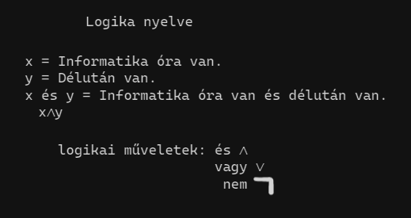

Logikai műveletek:
Ez volt a legeslegelső dolog amit tanultunk (ha jól emlékszem). Arra emlékszem, hogy rengeteget kellett írni, és itt még talán a gépeket nem is nagyon használtuk. Nem hinném, hogy sok nehézségem lett volna vele, de ha valamit nem értettem akkor Dorkára mindig számíthattam és rengeteget segített.
>